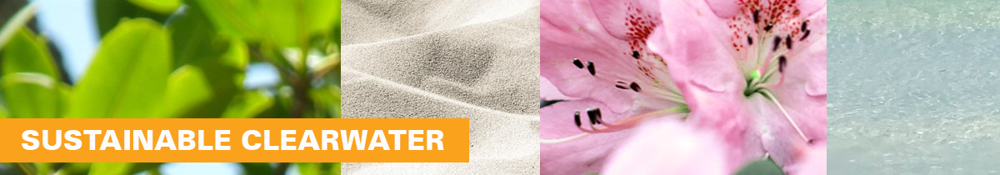
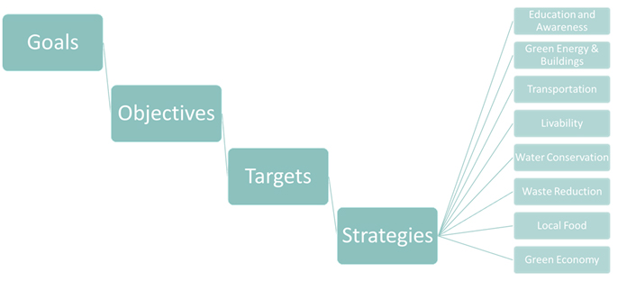

City of Clearwater, FL
Home MenuClearwater Greenprint
Clearwater's Sustainability Plan

 Executive Summary
Executive SummaryIn 2011, Clearwater Greenprint was adopted through the help of many residents, businesses, and city staff members. Clearwater Greenprint creates a vision to make the city of Clearwater a vibrant community for current residents and future generations. in 2021, Clearwater Greenprint 2.0 was published to advance that vision.
While this Executive Summary provides a quick overview of the contents of the Clearwater Greenprint, it cannot be substituted for the main document.
- Defines sustainability, resilience, adaptation, mitigation, and other pertinent terms, and discusses their relevance to the document
- Communicates results of the 2010 and 2019 Greenhouse Gas Inventory
- Includes projections for business-as-usual emissions and emissions with interventions by Duke Energy
- Defines overarching Goals and Objectives for the city of Clearwater to mitigate climate change impacts, actualize adaptation measures, and improve local resilience
- Defines Target Timelines for more specific reductions toward the accomplishment of overarching Goals and Objectives
- Provides reader-friendly Strategies toward compliance with Target Timelines
- Expounds on specific actions and identifies assumptions and limitations associated with the accomplishment of Strategies in Implementation and Measurement Methodologies
- Sources input on relative cost and benefit from staff
- Gauges staff’s perception of specific actions’ efficacy
SustainabilityWhat Is Sustainability?
Sustainability means different things to different people. Some people might think of recycling, and others might think of solar panels or growing their own organic food. What is sustainability, really?
The United Nations defined the word sustainability in 1987 as the ability to, “meet the needs of the present without compromising the ability of future generations to meet their own needs.” In essence, sustainability is about helping the people of today and people of tomorrow meet their needs. Sustainable communities work with and within nature. They use resources that can be renewed, and attempt to reduce waste, reuse materials, and find ways to safely return resources back to the environment. Sustainable communities also make plans and decisions that balance the three parts of a triple bottom line: economic prosperity, environmental quality, and human quality of life.
If we think about sustainability in terms of a triple bottom line, we realize that it is not an unfamiliar concept. For most of our history, humans have lived in a way that had minimal impact on the world’s natural resources. However, over the course of the last century, we have caused large-scale declines in the quality of water, air, and soil, and devastated animal and plant species worldwide. Since communities depend on natural resources to maintain a prosperous economy and good quality of life, working hard to preserve the integrity of the environment helps ensure our communities’ continued prosperity.
Why Sustainability?
Recent human actions such as unchecked pollution and mass deforestation have negatively impacted the climate and degraded natural ecosystems causing high rates of species extinction, global temperature increase, rising seas, and dying coral reefs. Scientists expect Americans to experience more severe heat waves, droughts, flooding, wildfires, and hurricanes in the future if we continue with current trends in fossil fuel usage. Studies show that these impacts will afflict our economy, strain our natural resources, and worsen inequalities for many Americans. These are only a fraction of the negative impacts stemming from climate change, but they speak to the urgency of countering its effects.
Despite all this, we have only recently begun to take action. Thankfully, local governments and community residents can contribute to a solution to the climate change problem by building low-carbon communities which are not dependent on carbon-intensive resources. Cities use 75% of the world’s energy and produce 80% of the world’s greenhouse gas emissions. Though this fact may not seem like a positive thing at first, it means that the collective actions of cities, including the city of Clearwater, will result in an appreciable reduction in the world’s greenhouse gas emissions. The city of Clearwater has an opportunity to set an example for other cities and have a positive impact on the world.
Sustainability isn’t just about the planet, it’s about people. Sustainable communities are stronger communities. In addition to addressing climate change, being a sustainable community has other important benefits such as:
1. Saving Money
The city of Clearwater spent over seven million dollars in 2018 on energy to power buildings and streetlights. Many of the measures in Greenprint 2.0 “pay for themselves” quickly by reducing direct costs, such as fuel or energy used, as well as indirect costs such as maintenance. For instance, a “right-sized” vehicle fleet is less expensive to purchase and fuel, while also being less costly to maintain. Encouraging energy efficiency, public transit use, building improvements, and other measures will also result in lower energy and water bills for residents and employers. The economy benefits by reducing the amount of money each person spends on energy and water. This money can instead be used at local businesses, supporting the city of Clearwater’s economy.
Acting now will also save on runaway costs on climate change—especially in the long term. These costs range from infrastructure damage in extreme storms and pest control, to industry losses, particularly for industries that depend on environmental conditions, such as tourism.
2. Creating Jobs
New green sectors such as sustainable tourism, green construction, and urban agriculture provide additional job opportunities in growing economic sectors. These activities can spur business and job growth through the design, manufacturing, and installation of energy-efficient technologies, presenting a special opportunity to reinvest in the local economy and generate green jobs. For example, a 2019 Environmental Entrepreneurs’ report estimated that the solar industry employed nearly 335,000 workers. Solar professions within the United States have increased 167% over the past decade according to the National Solar Jobs Census and Florida leads the nation for the number of jobs added.
3. Improving Public Health
Our health improves with cleaner air and water and more time spent outside engaging in physical activities such as walking and biking. Sustainable changes, including using different modes of transportation, helps clean the air and improve public health by reducing vehicle emissions. Improvements that promote alternative transportation also give Clearwater residents more options for getting around. When combined with other activities like the redevelopment of underutilized properties, these improvements create a more vibrant, livable community with shorter commute times and more opportunities for active transport.
Sustainable changes create equitable access to amenities for residents living in low-income areas across the country. Many of these low-income areas lack the trees and greenery that create shade and improve the appearance of more affluent neighborhoods. Residents of these low-income areas also have a higher likelihood of living in or near areas covered in dark surfaces. The overabundance of blacktop causes residents to suffer more from the summer heat, leading to higher health costs.
Community ResiliencyWhat is Resilience?
Community resilience is defined as, “a measure of the sustained ability of a community to utilize available resources to respond to, withstand, and recover from adverse situations.” Therefore, a resilient community is one that can face a challenge and still retain its essential function. “Sustainability” and “resilience” are qualities of a community that complement each other. While sustainability focuses on having a brighter future, resilience is all about adapting to the different stressors we face now. Whether it’s a natural disaster, sea-level rise, or a drastic change in the economy, a resilient community is one that can anticipate and positively adapt to changing conditions.
Why Resilience?
1. Creating Proactive Communities
Resilience transforms reactive communities into proactive communities. Rather than solely developing plans to deal with the aftermath of a natural disaster or economic downturn, resilient communities develop measures to prevent massive disruptions from harming their people and systems. While Clearwater Greenprint 2.0 focuses on resilience through the lens of climate adaptation, resilience is a practice that can be implemented in all aspects of an organization.
2. Promoting Energy Stability
The farther energy travels from its source, the more energy that is wasted. Most electrical power in Clearwater is currently supplied by Duke Energy. The closest energy source for Clearwater is a fossil fuel power plant approximately 15 miles away near Holiday. This creates an opportunity to improve energy efficiency by generating more energy locally. Renewable energy can be generated in many ways including through the power of the sun, wind, and water. Installing solar panels on homes and businesses reduces energy waste since energy generated does not need to travel far from its source before it is used. Renewable energy is also a sustainable solution to the problem of meeting energy needs in times when energy is in high demand or unavailable from far-away power plants. This means that on hot summer days, and in the aftermath of major storms, renewable energy can keep lights on and air conditioning running within the homes, businesses, and municipal facilities of Clearwater.
3. Ensuring Food Security
Like energy, transportation of food over long distances results in waste and negative environmental impacts. Currently, nearly all of Clearwater’s food is imported from elsewhere. The city’s resiliency can be improved by producing more food locally to reduce inefficiencies caused by transporting food over long distances. Local food production also protects against service disruptions caused by a variety of factors, including the effects of climate change, economic change, and political conflict.
4. Establishing Economic Security
The Fourth National Climate Assessment estimates the costs of climate change in the United States could total more than $2 trillion a year by the end of this century. Much of this cost results from the damage intense storms and flooding are expected to inflict on infrastructure and private property.
Adopting resilient solutions saves cities a significant amount of money on future energy, water, and infrastructure needs. This is due to the increased ability of these systems to adapt or withstand future climate stressors, which are events, trends or conditions that result from climate change that can magnify hazards. Resilient communities face fewer system failures and costly repairs. Innovative cooling technologies and adaptions further cut energy bills while the benefits these innovations bring to health and livability are expected to compound over time.
While cities drive the national economy, small businesses drive the local economy. Small businesses make up 99.7% of all US employers. Small businesses are threatened by the effects of climate change and the increasing number of disaster events. Small firms are especially challenged by disaster events, as the U.S. Chamber of Commerce notes that 43% of small businesses do not recover from natural disasters.
Let’s Learn from Each Other
The complex problems of climate change affect each municipality differently. Therefore, detailed insights about current conditions and prospective solutions from citizens and stakeholders are critical in the process of identifying and implementing effective measures for adaptation and mitigation. Clearwater can provide invaluable guidance on the concrete impacts of proposed remedies—parsing out measures that will provide the greatest benefit from those that can only offer marginal relief.
Where Are We Coming From?
Clearwater Greenprint was adopted in 2011 through the collaboration of residents, businesses, and the City. Clearwater Greenprint creates a vision to make Clearwater a vibrant community for everyone who lives here now and for generations to come.
Reducing the city’s greenhouse gas emissions was determined to be the number one goal of Clearwater Greenprint. Why? Because The current overabundance of greenhouse gases in the atmosphere caused by human activity is a major contributor to climate change and closely related to other environmental concerns within the city of Clearwater. Large amounts of greenhouse gases in the atmosphere are known to worsen sea-level rise, drought, flooding, and so on. It is critical that we reduce our greenhouse gas emissions to ensure that Clearwater remains a great place to live, work, and visit.
Measuring Our Greenhouse GasesMeasuring Our Greenhouse Gas Emissions (GHGs)
In addition to being caused by human activities, climate change also occurs because of the earth’s natural cycles. For example, the amount of the best-known greenhouse gas, Carbon Dioxide (CO2), in the northern hemisphere changes from one season to the next as plants undergo cycles of growth. Despite this, scientists have observed an enduring upward trend in greenhouse gases that are attributed solely to ongoing human activities such as the burning of fossil fuels, commercial animal agriculture, and land development. In fact, about half of all carbon dioxide emitted between 1750 and 2010 occurred in the last 40 years. Therefore, even though the natural greenhouse effect is needed to keep the earth warm, the consensus among publishing climate scientists (97% in agreement according to the National Aeronautics and Space Administration) is that the accelerated rate at which humans are producing GHGs causes global warming and climate change.
The 2014 Intergovernmental Panel on Climate Change (IPCC) Fifth Assessment Report (AR5), was written by a panel of hundreds of climate experts and scientists and was approved by a team of external reviewers. The report states unambiguously that anthropogenic (human-made) GHG emissions are causing global climate change. For this reason, the city of Clearwater is joining an increasing number of local governments committed to addressing climate change at the local level.
The city of Clearwater recognizes the risk climate change poses to its residents and business owners. The city is actively acting to reduce the GHG emissions, or “carbon footprint”, of both its government operations and the community at-large through innovative programs laid out in Clearwater Greenprint. Furthermore, it is recognized that Clearwater needs to address existing climate risks, such as sea-level rise and temperature increase, and adapt its systems and infrastructure to new conditions.
With more than 80% of Americans living in urban areas, cities play a powerful role in addressing climate change. Adjusting the design of cities—how we use our land, how we design our buildings, how we get around—greatly impacts the amount of energy we use and the volume of GHG emissions we produce. Cities such as Clearwater can demonstrate that it is possible to dramatically reduce GHG emissions while creating vibrant and prosperous places to live by making appropriate and manageable adjustments.
The city of Clearwater first began monitoring its GHG emissions in 2007. It conducted a follow-up study in 2018. The following subsections summarize the results of both studies and compare city emissions levels over the span of approximately 10 years.
2007 GHG Emission Levels
The city took its first step in improving its carbon footprint in 2011 by calculating its community-wide GHG emissions. The study was based off of the city’s 2007 GHG levels.
In 2007, city-wide greenhouse gas emissions totaled 1,295,619 metric tons of carbon dioxide equivalent (MTCO2e). Emissions from energy consumption and transportation fuels were the largest contributors to the city-wide greenhouse gas inventory (65% and 30%, respectively). Solid waste contributed 5% while the city’s water and waste-water operations accounted for 0.1% of emissions. The average GHG emissions per capita was 11.72 MTCO2e based on the city's 2007 population of 110,469. Based on these 2007 levels, GHG emissions were forecasted for 2035. It was projected that if city continued with “business as usual”, city-wide emissions would grow by 4% to 1,347,443 MTCO2e by 2035.
Initial Clearwater Greenprint Goals
The City established two emission reduction goals based on the GHG inventory results:
- Reduce city-wide greenhouse gas emissions 10% below 2007 levels by the year 2020, and
- Reduce city-wide greenhouse gas emissions 25% below 2007 levels by the year 2035.
The original Clearwater Greenprint was created to reach these emission reduction goals. The plan included real strategies that the city, businesses and local residents could bring into their daily lives to reduce greenhouse gas emissions. These strategies were selected to help create a sustainable community by making buildings and transportation systems more energy-efficient, maintaining a healthy local economy, creating “green” jobs, reducing waste, and encouraging shoppers and restaurants to buy locally grown foods.
Since 2011, the city has made significant progress towards its initial sustainability goals. Many of the original Clearwater Greenprint Plan strategies have been completed or are in progress. A Sustainability Coordinator was hired to facilitate fulfillment of the Greenprint strategies and ensure that the city’s sustainability goals are reached. In 2021, Clearwater Mayor Frank Hibbard signed on as a Climate Mayor. The Climate Mayors group is a network of U.S. mayors who work together to address climate change by creating meaningful actions in their own communities.
2018 GHG Emission Levels
A second GHG inventory was conducted in 2019 using 2018 data to track the City's progress toward its 2020 climate goals. According to the inventory, the community-wide GHG emissions for 2018 were 1,128,690 MTCO2e, 12.9% below its 2007 levels. Together, we achieved our first goal!
Like 2007, emissions from energy use and transportation fuels continued to be the largest contributors to the city-wide GHG inventory. However, emissions from energy consumption decreased from 65% in 2007 to 59% in 2018, while emissions from transportation fuels increased from 30% to 38%. This is thought to be a result of Duke Energy increasing its reliance upon renewable energy and natural gas which decreased emissions for the city of Clearwater. Solid waste emissions were reduced from 5% of the 2007 inventory to 3.3% of the 2018 inventory. The city’s waste-water operations continued to have a marginal effect on the city’s total emissions, reducing from 0.13% of the 2007 inventory to 0.12% of the 2018 inventory.
Where Are We Going?
Based on the city's population of 116,478 in 2018, average GHG emissions per person were 9.69 MTCO2e. Based on the 2018 levels, Clearwater's community-wide emissions were forecasted for the next three decades.
Under this "business as usual" scenario, in which Clearwater does not make or experience any major changes to its emissions, the community's total greenhouse gas emissions would stand at nearly 1.1 million MTCO2e by 2035, increasing to over 1.2 million MTCO2e by 2050. This is largely due to the increased number of miles traveled by automobile per person.
However, in 2019 Duke Energy announced its goal of becoming carbon neutral by 2050. To achieve carbon neutrality, the utility company will shift its electricity energy sources away from coal and towards lower-carbon energy solutions. If this goal was to be achieved by Duke Energy, Clearwater's greenhouse gas emissions would fall to roughly 972,000 MTCO2e in 2035 and further to 823,000 MTCO2e in 2050. This decrease would occur even if the city did not pursue further greenhouse gas reduction measures of its own.
In December of 2015, 197 countries, including the United States signed onto the historic Paris Climate Agreement. The overarching goal of this international climate accord is to limit global warming to well below 2° Celsius compared to pre-industrial levels. Though the United States temporarily withdrew from the agreement in 2020, the nation rejoined in 2021. In the years since the announcement to withdraw from the accord, local implementation of the Paris Climate Agreement has been a focus for local governments nationwide—including the city of Clearwater. The decision to rejoin the accord bolsters the city’s ongoing GHG reduction efforts and opens the door to opportunities for much-needed federal aid. With new, more ambitious GHG reduction goals, Clearwater Greenprint 2.0 is anticipated to reduce community-wide greenhouse gas emissions to under 260,000 MTCO2e by 2050.
Envision Our Future
Clearwater Greenprint 2.0 has two overarching Goals:
- Reduce the city’s GHG emissions 25% below 2007 levels by 2035 and;
- Reduce the city’s GHG emissions 80% below 2007 emission levels by 2050.
But also seeks to accomplish the following Objectives:
- Transform Clearwater into a community where people walk, bike, take transit, or carpool for most trips in a safe, accessible, and affordable transportation network.
- Make Clearwater a leader in clean and local renewable energy opportunities.
- Transform our buildings into high-performing places to live, work, learn, and play.
- Inspire community action and ensure environmental justice and equity as we transition to a lower-carbon, more sustainable community.
- Create a thriving urban agriculture community in order to increase the local knowledge and abundance of healthy, sustainable food.
- Become a leader in sustainable, smart transportation through innovative partnerships, policies, programs, and technology.
- Understand potential climate-related risks and mitigate these risks while preparing our community to chronic and extreme weather events.
The following lists the targets Clearwater Greenprint aims for in order to maintain a competitive, vibrant, and green Clearwater for future generations, while improving the quality of life for those who live here today.
Often, world problems can seem so daunting. But positive change is possible. And maybe it’s not from one person doing a big thing but from many people doing small things. Chinese philosopher, Lao Tzu, stated “a journey of a thousand miles begins with a single step”. Greenprint invites you to find your “single step” and run with it. We are each essential to creating a sustainable city. Together, we can go far.
Target Timelines2025
- 10% reduction in energy use in city buildings
- Institutionalized climate adaptation as a citywide priority through formal adoption by ordinance
- Regional, state, and national climate adaptation partnerships in government and in the private sector
- Three new urban agriculture programs/centers available for the community
2030
- 20% reduction in energy use in city buildings
- 20% of electricity from renewable energy sources
- 5% of workers carpool to work
- 5% of workers bike to work
- 5% of workers walk to work
- 10% of workers use public transit
- 5% of workers telecommute
- Energy-efficient building regulations are created and enforced for new construction
- 30% of new housing units within 1/4 mile of high-frequency transit designated affordable
- Food outlets located within a 15-minute walk of every resident sell fresh produce
- Miles of bike lane per resident in low-income neighborhoods are equal to that in higher-income neighborhoods
- 20% reduction in energy costs to low-income residents
- Roof-top solar is installed on homes of 1,000 low and moderate-income residents
- An emergency cooling center is located within a 10-minute walk in low-income neighborhoods
- 20% of workers use public transit
2050
- 90% of existing municipal buildings completed energy efficiency improvements in accordance with Recommissioning Plan and Energy Policy requirements
- 15% of workers bike to work
- 15% of workers walk to work
- Advocate for 100% carbon-free public transportation
- 50% of all residents' light-duty vehicles are electric
- 100% of the city's light-duty vehicles are electric or fueled by carbon-free fuel
- 50% of the city's heavy-duty and freight trucks are electric or carbon-free
- Lower levels of heat-related illness and death are observed in 2050 than in 2018
- Reliability and affordability of potable water is maintained through water conservation , efficiency, and independence
How to Read Clearwater Greenprint 2.0Clearwater Greenprint 2.0 takes advantage of common-sense approaches and policies that our local government is uniquely positioned to implement – actions that can reduce energy use and waste, create local jobs, improve air quality, and benefit Clearwater for years to come.
Document Structure
The diagram shown below outlines the document structure of Clearwater Greenprint 2.0. Some of the components of the plan, namely goals, and targets have already been defined. Core Topics and Strategies are defined in the sections below.

Core Topics
Clearwater Greenprint 2.0 contains the same eight topics found in the original Clearwater Greenprint plan. These eight topics were identified as areas in which the city can achieve greenhouse gas reductions and cost savings:
- Education and Awareness,
- Green Energy & Buildings,
- Transportation,
- Livability,
- Water Conservation,
- Waste Reduction,
- Local Food, and
- Green Economy.
Strategies
The Clearwater Greenprint 2.0 includes measurable and achievable strategies that the city, businesses, and residents can incorporate into their daily lives to accomplish each target outlined in the previous section. In this document, strategies provide the foundation for addressing sustainability issues over a 30-year planning period and beyond. The strategies focus on actions that can be implemented at the local level over the span of 0-5 years (short-term), 6-10 years (medium-term), and 11-30 years (long-term). The Clearwater Greenprint 2.0 is intended to be a framework for specific action with built-in flexibility for timing and emphasis. Each Strategy corresponds to a Core Topic. For example, the “Community Education” Strategy is presented under the “Education and Awareness” Core Topic.
Green Glossary
Each of us has a different level of understanding and exposure when it comes to the environment, sustainability, and government functions. In order to make Clearwater Greenprint 2.0 accessible to everyone, a Green Glossary is provided at the beginning of the document. Words in green can be found there with an explanation.
Mitigation and Adaptation
The city of Clearwater is already experiencing the effects of climate change. The 2020 Atlantic hurricane season was the busiest ever recorded with 31 tropical cyclones. The same year, the state of Florida experienced record-breaking temperatures for six months of the same year. Water levels in Tampa Bay have also increased nearly eight inches over the last 60 years.
Reducing community GHG emissions is climate mitigation, meaning it will reduce the negative impacts of climate change in the future. Clearwater Greenprint 2.0 also considers climate adaptation, the need to address the climate hazards that Clearwater already experiences in order to make the city resilient. Climate adaptation is a form of risk management. Current hazards, like increased heat, sea levels, and precipitation levels, are magnified by climate change and the city needs to plan accordingly. As such, Clearwater Greenprint 2.0 proposes climate change mitigation strategies that support adaptation and avoid those that may contribute to anticipated climate change impacts.
Equity and Inclusion
Equity and inclusion components are interwoven throughout this document. Low-income populations, communities of color, people with disabilities, elders, refugees and immigrants, and other frontline communities often bear the brunt of climate impacts without the necessary infrastructure and support systems, and without gaining any of the benefits of a clean and sustainable future. Inequity correlates with greater vulnerability to physical challenges, making many in Clearwater disproportionately at risk from the impacts of natural disasters and climate change. Creating a resilient community entails addressing the social inequities that cause disparities in health outcomes, income, educational attainment, and more.
Emissions Reduction Potential
Calculating expected GHG emissions reductions for each mitigation strategy requires making assumptions about the degree of implementation, technology, and individual behavioral changes several years into the future. Since the desired GHG emissions reductions have yet to occur, other measurable factors are used to predict their outcomes. The strategies discussed in this report are the predictive factors, and the symbols shown below represent their respective impacts on GHG reductions and Target Timeline items. The symbols distinguish between strategies with low potential impact, medium potential impact, and high potential impact on the Clearwater’s GHG reduction goals. Strategies with an unknown impact are assigned their own symbol as well. This “unknown potential impact” symbol is used in cases where is difficult to gauge how certain tactics, like education and the localization of resources, will be embraced and acted upon.
- Low Potential Impact
- Medium Potential impact
- High Potential Impact
- Unknown/Undefined Potential Impact
Strategy Status Indicators
Clearwater Greenprint 2.0 includes a combination of existing policies and programs as well as new ideas based on best practices locally and nationwide. The Greenprint also incorporates strategies used by local governments. The document notes whether a Strategy is currently ongoing, in-progress, or not yet started. There are a few Strategies from the first Clearwater Greenprint plan that are no longer goals. These strategies will be listed in Appendix IV alongside an explanation as to why they are no longer included in the city’s plan.
- Not Started
- In Progress
- Strategy has been completed or is ongoing
Evaluation of Strategies and Their Benefits
In addition to measuring the GHG reduction potential, each Strategy is also marked for other benefits that may be experiences from implementation such as public health, equity and justice, jobs and prosperity, environmental conservation, and resilience. The symbols below indicate the co-benefits each Strategy are likely to generate (if any).
- Supports jobs and prosperity
- Advances equity, inclusion, and justice
- Improves local environmental conservation initiatives
- Improves public health
- Increases community resilience
Green Glossary- Affordable Housing: housing in which the occupant pays no more than 30% of their gross income in housing costs
- Biomass: plant or animal material that is used to produce energy
- Bioswale: ground channels that are typically vegetated and designed to gather and transfer stormwater runoff while removing debris and pollution from the water
- Brownfield: previously developed land, usually with prior industrial uses, that is not currently in use and may be contaminated with potentially hazardous waste
- Bus Rapid Transit (BRT): a bus-based public transportation system that has been designed to improve the reliability of bus services.
- Climate Adaptation: as defined by the Intergovernmental Panel on Climate Change (IPCC), it is the process of adjusting to an actual or expected climate and its effects with the ultimate goal of moderating or avoiding harm
- Climate Change: a long-term change in average global or regional climate patterns. This term specifically refers to the change noted in the late 20th century and scientific projections of continued change in the future. Climate Change is largely attributed to the increased levels of atmospheric greenhouse gases due to human activity
- Climate Mitigation: the act of limiting the magnitude or rate of climate change, generally done by reducing greenhouse gas emissions from human activity
- Compostable: materials that can break down naturally into organic matter to create nutrient-rich soil
- Complete Street: streets designed and operated to prioritize safety, comfort, and access to destinations for all people who use the street, especially people who have experienced systemic underinvestment or whose needs have not been met through a traditional transportation approach
- Congestion: an excess number of vehicles on a portion of roadway at a particular time that results in slower than normal flow of traffic
- Critical Infrastructure: the physical and digital systems and assets that are so vital to the community that their incapacity or destruction would have a debilitating impact on physical or economic security or public health or safety
- Energy Efficiency: technology that reduces the energy needed to produce a desired effect
- Environmental Justice (EJ): as defined by the Environmental Protection Agency, it is the fair treatment and meaningful involvement of all people regardless of race, color, national origin, or income, with respect to the development, implementation, and enforcement of environmental laws, regulations, and policies
- Equity: shared economic, legal, environmental, and developmental rights of access to collective resources amongst all people within a society
- Food Security: the state of having reliable access to affordable, nutritious, and sufficient food
- Foodshed: a geographic area that produces the food for a specific population
- Fossil fuels: fuels created by the anaerobic breakdown of dead organisms that release energy when combusted, these include fuels such as gasoline, oil, and coal
- Gentrification: a process in which lower-income areas of a community experience an increase in middle class to wealthy land buyers who renovate homes and businesses, resulting in an increase in property values and the displacement of lower-income residents who have historically lived or owned land in the area of interest
- Greenhouse Gas Emissions (GHGs): any gas that is capable of absorbing heat energy from the earth's surface and readmitting that heat back to earth’s surface, creating a “greenhouse effect”. The most common greenhouse gases include carbon dioxide, methane, nitrous oxide, and fluorinated gases.
- Greenspace: an area within an urban environment that is mostly vegetation (such as grass, trees, wildflowers, shrubs, etc.) and is set apart for ecological, recreational, or aesthetic purposes
- Greyfield: land that contains a large structure, like a shopping mall or commercial facility, that has been abandoned
- Invasive Species: an organism that is introduced to a new area and causes ecological harm within its new environment
- Livability: all of the factors that comprise a community’s quality of life, which may include both the built and natural environments as well as economic prosperity, social stability and equity, educational opportunity, and cultural, entertainment and recreation possibilities
- Local Food: food that is produced within a short distance of where it is consumed
- Municipal: relating to a local governing body such as city, town, or village
- Native Plant: a plant species that is indigenous to a specific area, meaning it has occurred naturally in that area for a long time
- Ocean-friendly: an item or business that reduces or eliminates the use of single-use plastics such as plastic bags, Styrofoam, plastic straws, and so on
- Organic Waste: material that naturally breaks down and comes from a plant or animal
- Photovoltaic (PV) Systems: systems that collect and concentrate sunlight to produce the heat needed to generate electricity
- Public Transit: a system of transportation available to the general public in which groups of people travel on established routes and schedules
- Public-private Partnerships: a cooperative arrangement between two or more organizations within the public and private sectors, usually between a governing body and a business, that works to complete a project or provide services to a community
- Recycling: the process of collecting and processing materials that would otherwise be thrown away and turning them into new products benefiting the community and the environment
- Re-commissioning: a structured process of testing a facility’s systems and equipment to ensure they are functioning efficiently
- Redevelopment: the process of changing a property or an area of a city by replacing old structures (such as buildings, roads, etc.) with new ones
- Remediation: the removal of contaminants from soil, groundwater, sediment, or another environmental substance
- Renewable Energy: energy from a source that is not depleted when used (such as wind or solar power)
- Resilience: the ability of a piece of infrastructure, system, environment, or community to sustain or recover its essential functions when presented with a disruption
- Retrofit: the process of modifying something after it has been constructed
- Sea Level Rise: a global phenomenon in which global warming causes an increase in volume and quantity of water in the world’s oceans. Though it occurs globally, symptoms of sea-level rise can vary based on geographic location
- Sequester (carbon): the process by which atmospheric carbon dioxide is taken up by trees, grasses, and other plants through photosynthesis and stored as carbon in biomass (trunks, branches, foliage, and roots) and soils
- Solid Waste: a waste type that consists of everyday items discarded by the public, also called garbage or trash
- Stormwater: surface water that is produced in excess due to heavy rainfall
- Sustainability: meeting current needs without compromising the ability of future generations to meet their own needs
- Trip: a one-way person movement by a mechanized mode of transport
- Triple Bottom Line: a measurement of the financial, social, and environmental performance of an organization
- Urban Agriculture: the process of growing, processing, and distributing food within or near highly populated areas
- Vehicle Miles Traveled (VMT): a measurement of the amount of travel all vehicles within a specific geographic region performed within a given time period (generally one year)
- Vulnerability Assessment: the process of defining identifying, classifying, and prioritizing different parts of a system that may be adversely affected during a hazardous event
- Wastewater: water that was previously used in a home, business, or industrial facility
Credits & AcknowledgementsThis Climate Action Plan was developed using a template provided by ICLEI – Local Governments for Sustainability, USA. This template and its appendices were published in April 2018. The icons are licensed under Creative Commons Attribution 3.0 imported from Smashing Magazine.
City of Clearwater City Council
- Frank Hibbard — Mayor, Seat 1
- Mark Bunker — Councilmember, Seat 2
- Kathleen Beckman — Councilmember, Seat 3
- David Allbritton — Councilmember, Seat 4
- Hoyt Hamilton — Councilmember, Seat 5
City Administration
- Bill Horne — City Manager
- Micah Maxwell — Assistant City Manager
- Michael Delk — Assistant City Manager
2021 Clearwater Greenprint Update Contributors
- Lauren Matzke – Assistant Director of Planning and Development
- Heather Parsons – Senior Public Information Coordinator
- Sheridan Boyle – Sustainability Coordinator
2021 Consultants
- WGI, Inc.
- PFM Group Consulting LLC
2011 Greenprint Stakeholder Steering Committee
- Richard Adelson
- Ronald Altic
- Lidiya Angelova
- Cory Brennan
- George D. Davis III
- Chris Dulligan
- Blain Enderle
- Michael Engelmann
- Jason Green
- Marc Hayes
- Michael Henkel
- Mike Flanery
- Dr. Marcus Milnes
- Elvira Morgan
- Mary Marrow
- JoAnna Siskin
- Dr. Joseph Smiley
- R. Peter Stasis
- Alexander Todrow
- John Ungerer
- Thomas Wright
2011 Greenprint Technical Advisory Staff
- Nan Bennett
- Paul Bertels
- Tracey Bruch
- Rick Carnley
- Kristi Cheatham
- Glenn Daniel
- Allen Del Prete
- Leslie Dougall-Sides
- Bennett Elbo
- Kevin Garriott
- Diane Hufford
- Sarah Josuns Kessler
- Brian Langille
- Felicia Leonard
- Heather Parsons
- Himanshu Patni
- John Pittman
- Clement Vericker
2011 Greenprint Consultants
- Renaissance Planning Group
- ECO2ASSET SOLUTIONS
2018 Greenhouse Gas inventory assistance from ICLEI, Local Governments for Sustainability.
Front cover image provided by the Spring Branch Neighborhood and Park Association.
AppendicesOther ResourcesLearn More About Climate Change and GHG Mitigation Benefits
Climate Change Impacts
- Cho, R. (2019, June 20). How climate change impacts the economy. EI State of the Planet. https://blogs.ei.columbia.edu/2019/06/20/climate-change-economy-impacts/.
- Diffenbaugh, N. S., & Burke, M. (2019). Global warming has increased global economic inequality. Proceedings of the National Academy of Sciences, 116(20), 9808–9813. https://doi.org/10.1073/pnas.1816020116
Benefits of Energy Efficiency
- Florida Public Service Commission. (2004, June 8). 105 Causes of High Utility Bills - Florida Public Service Commission. http://www.psc.state.fl.us/Publications/CausesOfHighBill.
- Weisbrod, G., & Reno, A. Economic Impact of Public Transportation Investment. American Public Transportation Association.
- Report available online at http://onlinepubs.trb.org/onlinepubs/tcrp/docs/TCRPJ-11Task7-FR.pdf
Public Health Benefits
- United States Environmental Protection Agency. (2021, February 5). Progress Cleaning the Air and Improving People's Health. https://www.epa.gov/clean-air-act-overview/progress-cleaning-air-and-improving-peoples-health.
- Harvard Health Publishing - Harvard Medical School. (2010, July). A prescription for better health: go alfresco. Harvard Health Letter - A prescription for better health: go alfresco. https://www.health.harvard.edu/newsletter_article/a-prescription-for-better-health-go-alfresco.
Food Import Environmental Impacts
- Hannah Ritchie (2020). Environmental impacts of food production. OurWorldInData.org. https://ourworldindata.org/environmental-impacts-of-food.
- Rosenthal, E. (2008, April 26). Environmental Cost of Shipping Groceries Around the World. The New York Times. https://www.nytimes.com/2008/04/26/business/worldbusiness/26food.html.
Duke Energy Climate Report
- Duke Energy 2020 Climate Report. (2020). Retrieved February 22, 2021, from Duke Energy website: https://www.duke-energy.com/_/media/pdfs/our-company/climate-report-2020.pdf
Navigate to Other Greenprint Sections